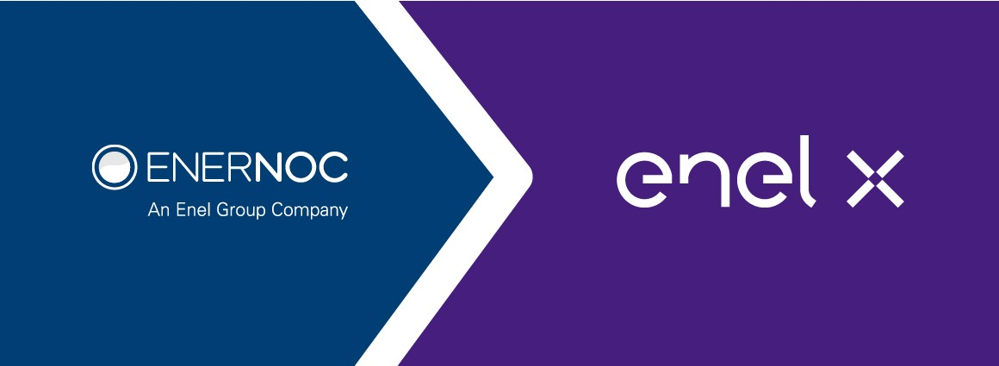

Systems & Analytics Co-op
Enel X North America is the preferred energy solutions partner for businesses across North America. it connects large energy users to opportunities in the energy world and help them integrate the technologies and processes they need to capitalize on them. With 10,400 demand response sites, a total of 4.7 GW of demand response capacity and intelligent software in more than 50,000 electric vehicle charging stations across North America
Two stints as the Systems & Analytics co-op at EnerNOC and Enel-X gave me an in depth insight about various processes of the Energy Markets Team. The Energy Markets team is responsible for enrollment, nomination and settlement of customers participating in the Demand Response program. I had the good fortune of working with geographically distributed teams to develop analytical tools for new and old markets